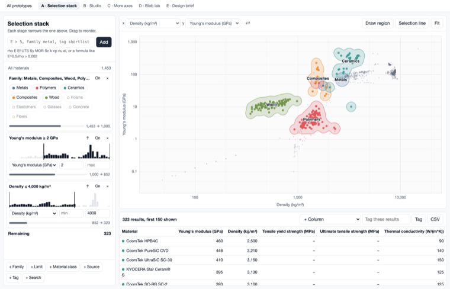
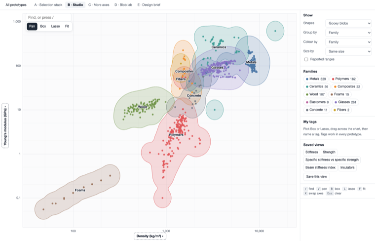
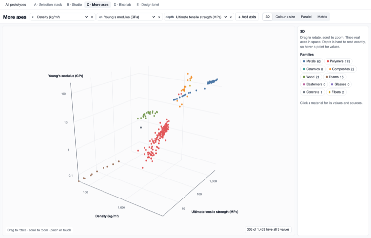
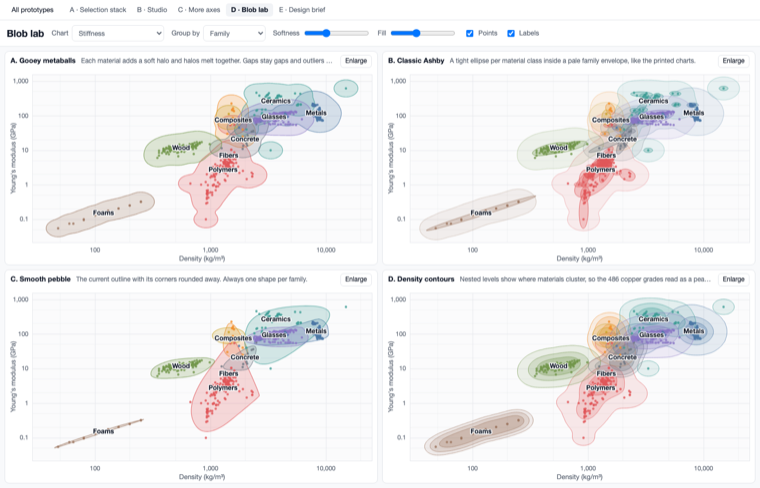
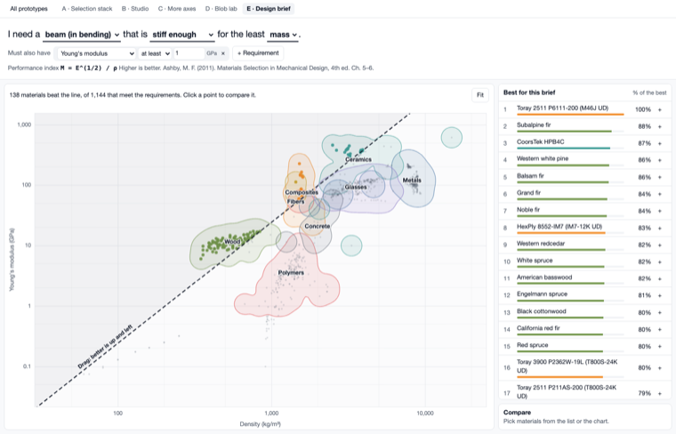

Ashby chart prototypes
Five working studies on the real database, all 1,453 materials. Each one is meant to be used, so try the suggestion on its card. They can be mixed: pick the parts you like from each.
Studies

A · Selection stack
Filters chain like Granta. Each stage shows how many materials it removed, and you can switch it off or reorder it.
Try: type UTS > 200, then draw a region on the chart.

B · Studio
The chart fills the screen. Click an axis to change it or write a formula. Lasso materials and name a tag straight away.
Try: press L, circle the woods, type a tag name, press Enter.

C · More axes
One axis list, four ways to draw it: 3D, colour and size, parallel axes, and a matrix of every pair.
Try: rotate the 3D view, add an axis, then filter in Parallel.

D · Blob lab
Four shape methods on the same data, with softness and fill controls. Pick what looks right.
Try: move Softness, then group by Material class.

E · Design brief
Describe the part in a sentence. The right performance index, guideline and ranking follow. Compare your picks side by side.
Try: change beam to plate and drag the dashed line.
What you asked for, and where to try it
| Request | Where | How it works |
|---|---|---|
| Prototype link gone from the top | Live chart | Already removed on the release branch. All of these pages are private to this server. |
| More flexibility in what is plotted | B | Click an axis. Properties are ranked by how many materials would plot. Log or linear per axis. Any formula, such as E^0.5/rho. Colour and size by any property. Saved views. |
| Easy tags | B, A | Box or lasso, type a name, press Enter. Tags can colour, group, ring or filter materials, and they carry across all five studies. |
| Blobbier blobs | D | Gooey metaballs, classic Ashby ellipses inside a family envelope, smooth pebbles, or density contours. |
| More responsive | All | Canvas with no chart library: scroll to zoom, drag to pan, and every filter updates live. Page ready in 69 ms against 538 ms on a local server. All five work at phone width. |
| Chained filters like Granta | A | Stages for family, limits with a histogram, class, source, tag, search, a region drawn on the chart, and a selection line. Typed filters become stages. Shareable by URL. |
| Another axis | C | Add as many as you like, then compare four ways of showing them. |
Ideas I added
- Coverage shown up front. Axis menus and the axis list say how many materials have the values, since adding an axis can drop most of the chart. Density, stiffness and tensile strength together cover 303 of 1,453.
- Selection line. Drag a performance index line on the chart to filter by it, in A and E.
- Start from the part. Study E picks the index for you and writes out the equation and its source.
- Density contours. The 486 copper grades read as a peak instead of hiding inside one outline.
- Filter by source. Narrow to one manufacturer or handbook, in A.
- Keyboard use. Letter keys switch tools in B, and / jumps to search.
Before reading too much into these
- Each material shows one value per property, the median at room temperature. The real tool has to keep its stricter pairing of test conditions, so do not take design values from these pages.
- Blobs are drawings around plotted values. They are not statistical regions, and at high softness they cover ground where nothing was measured.
- Tags are saved only in this browser.